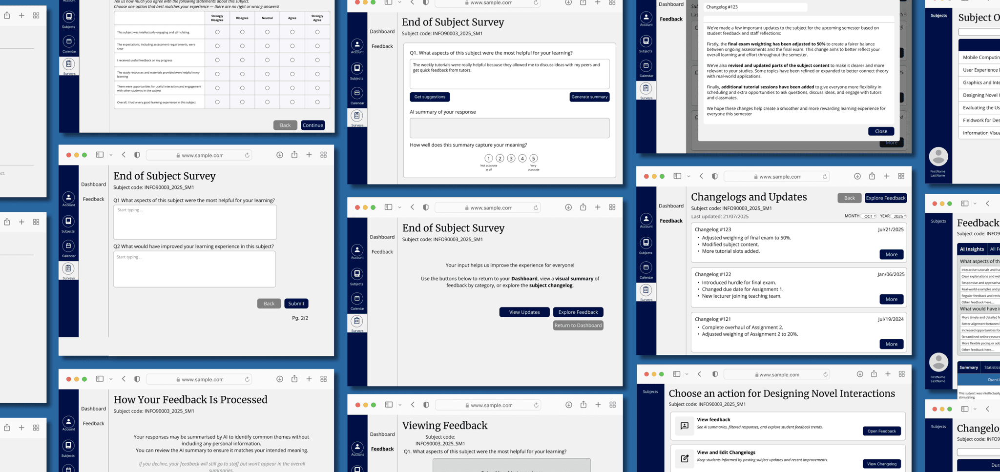

Problem
University feedback systems produce low-quality responses and lack transparency, leading to disengagement from students and limited usefulness for staff.
Case Study
A capstone project improving the process and outcomes of student feedback.

University feedback systems produce low-quality responses and lack transparency, leading to disengagement from students and limited usefulness for staff.
I conducted qualitative research, synthesised insights, designed and iterated low- to high-fidelity prototypes in Figma, and evaluated through usability testing and SUS.
Designed an AI-assisted feedback platform that improves feedback quality, transparency, and trust between students and staff.
Click here for a more comprehensive overview.
Our supervisor suggested this challenge to us as they saw potential in overhauling the current student feedback system. We were then provided a project brief which enabled us to begin preliminary research into the problem space.
Based on current research surrounding existing SET systems:
I proceeded with the research by conducting qualitative interviews with both students and teaching staff examining current SET practices. We explored the motivations, frustractions, and expectations around feedback systems after subsequent thematic analysis.

Thus, we generated the folllowing key research questions:
[INSERT 3 MAIN FINDINGS HERE]
Here, we present our solution addressing the problems raised by current SET systems.
Report2Barry is an all-in-one feedback platform integrated into the university's LMS (Learning Management System). It supports both students and staff through AI-assisted features and transparent feedback loops.
Getting to the final product was not a simple task; there were still many steps to take regarding research and design. We proceeded with figuring out what we will create and how we will achieve that.
We began by outlining the goals of what our solution should achieve:
Over the course of 14 weeks, we utilised the Double Diamond design model to help us develop Report2Barry. This framework helps to guide the design process by exploring the problem space first, before narrowing down to define and develop potential solutions.

With that, we proceeded with the following questions:
The image below showcases the various screens we identified to be essential for Report2Barry, in line with the core features previously mentioned.
[INSERT THE THREE PICS HERE]
Afterwards, the project progressed towards low- and high-fidelity prototypes in Figma.
[INSERT 4 LOW-FI PROTOTYPES HERE]
[INSERT 4 HIGH-FI PROTOTYPES HERE]
I ran moderated usability tests with students and staff using a high-fidelity prototype, alongside the System Usability Scale (SUS). Findings directly informed design changes such as clearer interaction affordances and improved information architecture.
We conducted moderated usability testing with 11 participants (students and staff) using the high-fidelity prototypes. Participants completed a series of context-specific tasks while thinking aloud, followed by the System Usability Scale (SUS) and open-ended questions.
[INSERT 4 IMPROVED SCREENS HERE]
[INSERT EXPLANATIONS FOR IMPROVEMENTS MADE HERE]
Upon testing the final prototype, we reported that:
This project strengthened my skills in UX research, high-fidelity prototyping, and designing AI-assisted experiences in a responsible manner. It challenged me to balance usability, trust, and system constraints all while delivering product experience that is cohesive end-to-end.
The research was limited by a small sample size and a qualitative-heavy approach. Future work would involve further validation using mixed-methods approaches, broader participant sampling, and deeper exploration into AI within educational feedback systems.